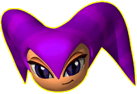
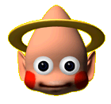

主な登場キャラクターたち
ナイツ
(NIGHTS)
ワイズマンの片腕として誕生したファーストレベルのナイトメアン。ナイトメアン本来のクレイジーさを持ちながら、誰にも従わない自由奔放な性格が災いして、ワイズマンの呪縛を受け、夢の狭間に監禁されてしまう。
彼が他のどんなナイトメアンよりも優れているところは、その飛行能力である。まるで魚が遊泳するかのように、自在に空中を飛び回ることができる上、空中でクルッと一回転すれば空中にポッカリと穴を開けることもできるのだ。
さらに体を思い通りに変形させることもできるため、たとえ水中でも、氷の上でも、彼の行けない場所などない。果たしてナイツに、ワイズマンの呪縛から解放され、自由になれる日が再びやって来るのだろうか？
エリオット・エドワーズ
(ELLIOT EDWARDS)
ツインシーズのセントラルスクエアに住む15歳の少年。何をやらせてもそつなくこなす彼は、学校でも一際目立つ存在だ。とくに彼の好きなバスケでは、同級生の中で右に出る者はなく、みんなの憧れの的である。
しかしクールな性格のため、自ら行動を起こしたり、人前で感情を表すような真似は絶対にしない。いわばシティ派のカッコイイ人間なのだ。もっとも、彼のこうしたスタイルが、事件に巻き込まれる原因になるのだが・・・。

クラリス・シンクレア
(CLARIS SINCLAIR)
ツインシーズの郊外に住む15歳の少女。芸術家の家庭に生まれ育ったため高い感受性を持っている。彼女は幼い頃から、ミュージカルの舞台に立つことを夢に見続けてきた。
しかし、いまだに甘えん坊で恥ずかしがり屋の彼女には、人前で華やかに演じるミュージカルの舞台など夢のまた夢だった。
そんな彼女にも、夢を叶える大きなチャンスが訪れたのだが・・・。
ナイトピアン
(NIGHTOPIAN)
夢の世界ナイトピアに生息する、無邪気で陽気な住人がナイトピアンだ。
楽しいことが大好きで、夢を訪れるビジターに楽しい夢を見せてくれる。
時には歌ったり、踊ったり。あの手この手で楽しませてくれるはずだ。

ナイトメアン
(NIGHTMAREN)
ナイトメアの支配者・ワイズマンに産み出された様々なナイトメアン達。
その中でも野蛮で低能なのがサードレベルだ。
彼らはいつも「どんなことをすればビジターが恐ろしいと感じるか」のみを考え、
それに沿った行動をとっている。

リアラ
(REALA)
ワイズマンの片腕として、ナイツと共に創り出された数少ないファーストレベル。
冷酷かつ残忍な性格でありながら、ワイズマンには絶対的な忠誠心をもつ。ナイツとほぼ同等な飛行能力があり、パラループをすることもできる。
その同等な能力と正反対の性格から、ナイツとは仲が悪く、お互いライバル視している。ナイツが監禁されたのも、彼の作戦によるものである。
 NightsHome
NightsHome
 戻る
戻る
(C)SEGA 1996
このページは、ソニックチームが制作しています。
1996/3/27,4/21,6/7